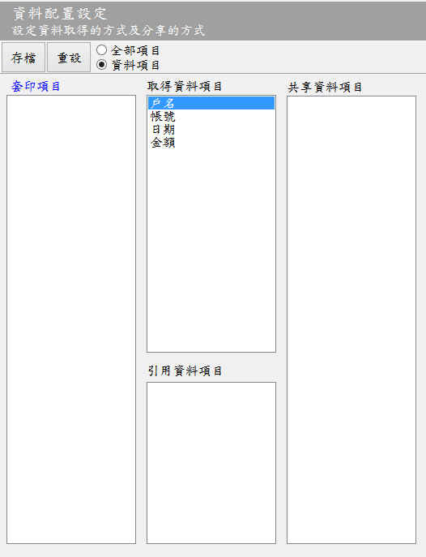

資料配置設定
本視窗用於設定資料字串類型
的套印項目，於套印時資料如何取得資料及分配資料。
系統接收到(使用者輸入或匯入)套印資料時，該項資料的配置方式有直接取得資料、共享資料或引用資料等3種方式。資料配置設定說明如下：
- 套印項目區域分類說明：
- 取得資料項目：此區域的項目，其資料可以來自手工輸入或檔案匯入。
- 共享資料項目：可與「取得資料項目」或「引用資料項目」分享資料，例如將日期切成年(日期本身使用)、月、日。
- 引用資料項目：從取得資料項目引用一份資料，例如同一個表格有多個位置需要套印日期，當使用者輸入後(僅輸入1次)，所有的日期都會直接引用該資料。
- 資料配置方式：將「資料字串項目」移動到直接取得資料項目、共享資料項目、引用資料項目等區域內的過程。
- 移動套印項目：
- 設定套印項目取得資料的方式：於「資料字串項目」中，將要移動的項目，用滑鼠左鍵按住後，直接托到指定的區域(直接取得資料項目、共享資料項目、引用資料項目)即可。例如將戶名移到「取得資料項目中」。
- 區域內調整先後順序：用滑鼠左鍵按住該項目，移至適當的位置後再放開滑鼠左鍵即可。
- 刪除套印項目：將項目從取得、共享、引用區域內移除，請直接在該項目上面，用滑鼠左鍵快點2下即可。
- 資料處理順序：設定資料取得的順序，說明如下：
- 相同配置的順序：在同一個配置內(例如直接取得套印項目)，其先後順序是由上而下。
- 共享資料的順序：依附於直接取得資料項目，將資料平均分配給每個成員，先分配給直接取得資料項目，再逐一分配享資料項目，形成一個群組關係。
- 引用資料項目：由直接取得資料項目複製一份完整的資料，引用資料項目也可以自行將資料分享給「共享資料項目」，並形成一個群組關係。
- 存檔：項目設定完成確認無誤後，先存檔再離開。
- 供其他視窗(功能)使用：
- 在「取得資料項目」及「引用資料項目」的套印項目，可提供「資料處理」、「輸入設定」及「匯入套印」以及「存檔設定」使用。
- 換言之「共享資料項目」不能也不必設定資料處理方式。

資料配置設定視窗